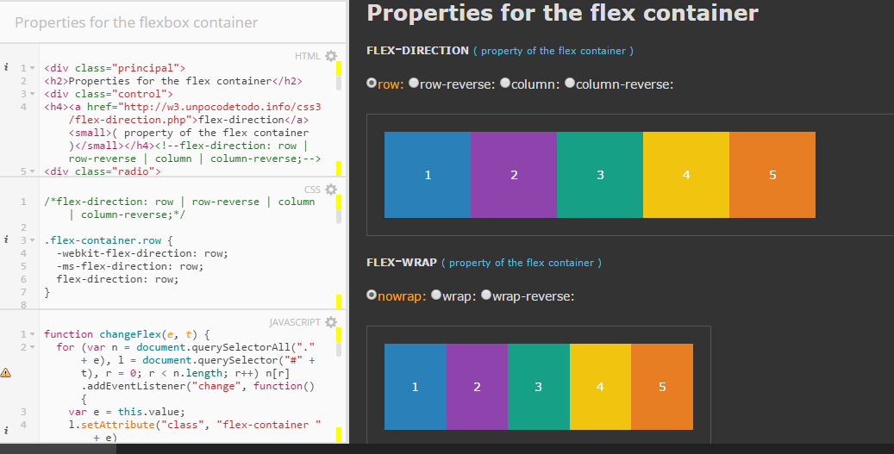

El agregar elementos flexibles en una página web es importante para poder generar una visualización optima en diferentes resoluciones. Se activa para un elemento mediante display: flex; en tu css, y con esto es importante entender los diferentes parámetros para poder utilizar el que mejor se ajuste a tu desarrollo
Entendiendo Flex
Con este CodePad, de manera interactiva y sencilla puedes ver los diferentes valores con los que puedes jugar utilizando la caracteristica Flex
Un contenedor flexible tiene un Eje principal (main axis), que es la dirección en la cual se posicionan los elementos flexibles. Y tiene un Eje transversal, perpendicular al Eje principal. Ambos ejes tienen una serie de propiedades que controlan cómo se posiciona cada elemento flexible en relación a los demás.